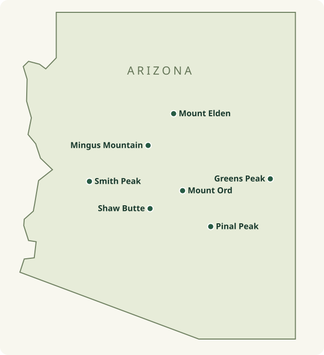

We’ll be listening for you.
A few simple steps to find the net and join the conversation.
Tune in around 9 PM MST.
The net is listed nightly at 21:00 MST (UTC−7), on ARA Rimlink. That is 04:00 UTC the following day. Listen for the evening’s opening and any operating changes.
Find your local Rimlink repeater.
Use the current ARA directory to confirm frequency, offset, tone and link status for your area. Listen first and follow the repeater’s operating policies.
RimLink Repeater Frequencies
All repeaters: W7ARA · Open access · FM · Arizona.
RimLink repeater frequencies and locations Location / Site Frequency (MHz) Offset Tone (Hz) McNary, Greens Peak 146.7200 − 162.2 Flagstaff, Mt Elden 147.1400 + 162.2 Globe, Pinal Peak 147.2000 + 162.2 Sunflower, Mt Ord 147.3600 + 162.2 Phoenix, Shaw Butte 442.8500 + 100.0 Aguila, Smith Peak 443.7750 + 100.0 McNary, Greens Peak 448.3750 − 100.0 Cottonwood, Mingus Mtn 448.5000 − 100.0 Globe, Pinal Peak 927.4125 − 151.4 Wait for the call for visitors.
The archived format begins with regular roll call, followed by late, missed and visiting stations. When invited, give your call sign clearly and follow net control’s directions.
Share a little of your day.
In the second round, net control gives each station a turn. Keep it friendly and concise so everyone has time to speak. Emergency or priority traffic takes precedence.
Choose a repeater.
